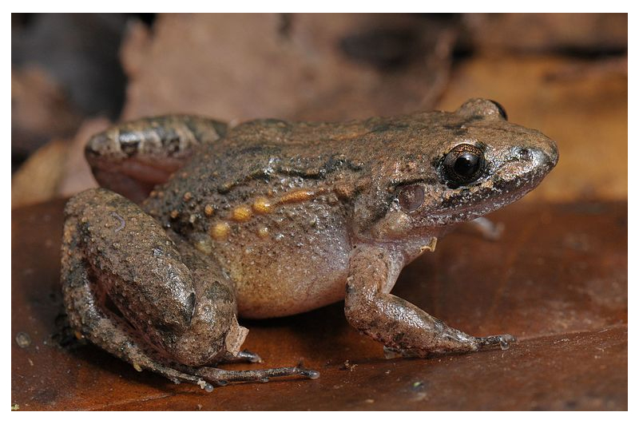

Nós da BIO Zona Oeste temos como Missão levar informação, cultura de preservação da biodiversidade e riquezas
encontradas nas florestas, serras e montanhas da região localizada na Zona Oeste da cidade do Rio de Janeiro.
Vamos conhecer um pouco da riqueza escondida nessas florestas!
Floresta da Posse

A Área de Relevante Interesse Ecológico Floresta da Posse (ARIE Floresta da Posse) constitui
uma unidade de conservação localizada na serra de mesmo nome, Serra da Posse, nos bairros de
Campo Grande, Santíssimo e Senador Vasconcelos (todos na cidade do Rio de Janeiro).
Geografia
A Serra da Posse é formada pelo conjunto de três morros (Luís Bom, da Posse e das Paineiras),
com altitude média de 155 metros, e o ponto culminante é o morro da Posse com 207m de altitude.
Localiza-se entre os maciços do Mendanha e o da Pedra Branca — duas estruturas morfológicas
que marcam o Rio de Janeiro — e, por isso, tem o potencial de ser um elemento natural de conexão
entre essas duas regiões de proteção ambiental.
Atualmente, apenas dois cursos d’água reduzidos existem de forma perene: Canal do Melo e o Córrego
Nosso Bosque. O Canal do Melo, localizado na vertente norte da Serra, é um dos afluentes do Rio do
Campinho (rio da Bacia Hidrográfica da Baía de Sepetiba), contando com trechos superficiais, visíveis,
e outros profundos, sem possibilidade de visualização.
Representa uma área de 171,56 hectares e perímetro de 11,95 quilômetros. Seu polígono compreende
ruas locais e pontos cartográficos específicos.
História
Originalmente, a vegetação que recobria a Serra da Posse era a mata floresta ombrófila densa submontana,
a qual sofreu alterações por causa de ações humanas, como desmatamento, queimadas e revegetação.
Aponta-se que vários córregos que possuíam as nascentes na Serra da Posse secaram muito provavelmente por causa
dessa perda florestal. Anteriormente a essa legislação protetiva, nos anos de transição entre os séculos XX e XXI,
a Prefeitura do Rio de Janeiro começou a recuperação ambiental da Serra, com divergência entre as fontes sobre o ano
específico de início.
Nos anos anteriores à criação da ARIE, a partir de um esforço iniciado pelo casal Thiago Neves e Marcela
Fonseca, surgiu o coletivo denominado "Nosso Bosque". A partir dele foram feitas ações para a conscientização
e a sensibilização da população sobre a importância da preservação da vegetação na Serra da Posse, contando
com documentação da biodiversidade no local por fotografias, mutirões de plantios de mudas de árvores e
atividades de convivência ao ar livre. Os registros fotográficos e informações do coletivo colaboraram ainda
para o estudo técnico que propiciou a criação da unidade de conservação. A ARIE passou a se constituir como
uma unidade de conservação a partir do Decreto Municipal 50962, de 2022,
assim como da Lei Municipal 7514, de 2022.
Fauna e Flora
O Estudo Técnico para a proposição da unidade de conservação para a Serra da Posse em 2022 da Prefeitura do
Rio de Janeiro trouxe uma análise do estado atual da fauna e da flora, pontuando limitações pela baixa quantidade
de dados prévios.
A vegetação em 2022 se caracterizava por uma mistura de formações florestais em diversos estágios de sucessão
ecológica, predominando as poáceas, como o capim-capim-colonião (Megathysurus maximus) e o capim-rabo-de-burro
(Andropogon sp.), ocupando mais de 46% da área da Serra da Posse. Estão também inseridas nesse mosaico as manchas
florestais em fases iniciais de sucessão ecológica, com espécies cuja maioria é originária de revegetação efetuada
pela Prefeitura. Três espécies arbóreas utilizadas no reflorestamento são destacadas: o palmiteiro (Euterpe edulis),
o pau-brasil (Paubrasilia echinata) e o ipê-tamanco (Tabebuia cassinoides), que são listadas como ameaçadas de
extinção da flora nacional.
Fotografia aérea de Serra da Posse, com suas diferentes formações florestais em 2023.
Gavião-de-rabo-branco (Geranoaetus albicaudatus) em Serra da Posse
Quanto à fauna, registraram-se nesse referido estudo, 23 invertebrados e 146 vertebrados, sendo 12 anfíbios, 19 répteis, 93 aves
e 22 mamíferos. Nele, destacaram-se:
Invertebrados
aranha-de-folhiço (Ctenus cf. medius)

azul-ferrete (Eryphanis automedon)
borboleta-estaladeira (Hamadryas amphinome)
xadrezinho (Pyrgus orcus)
tristão (Taygetis laches marginata)
Anfíbios
sapo-cururuzinho (Rhinella ornata)
rãzinha-piadeira (Adenomera marmorata)
Répteis
lagarto-verde (Ameiva ameiva)
teiú (Salvator merianae)
cobra-verde-de-cabeça-marrom (Philodryas olfersii)
Aves
quiriquiri (Falco sparverius)
gavião-carijó (Rupornis magnirostris)

gavião-de-rabo-branco (Geranoaetus albicaudatus)
caburé (Glaucidium brasilianum)
papagaio-verdadeiro (Amazona aestiva)
periquitão-maracanã (Psittacara leucophthalmus)
tucanuçu (Ramphastos toco)
jacupemba (Penelope superciliaris)
coleirinho (Sporophila caerulescens)
gibão-de-couro (Hirundinea ferruginea)
Mamíferos
ouriço-caxeiro (Coendou spinosus)
cachorro-do-mato (Cerdocyon thous)
morcego listrado (Platyrrhinus lineatus)
exótico gato-doméstico (Felis s. catus)